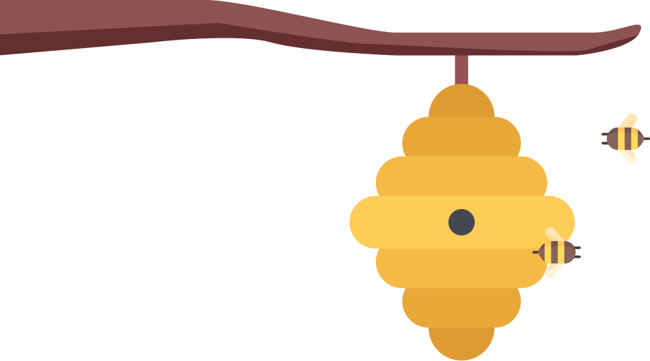
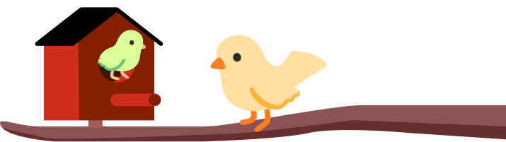
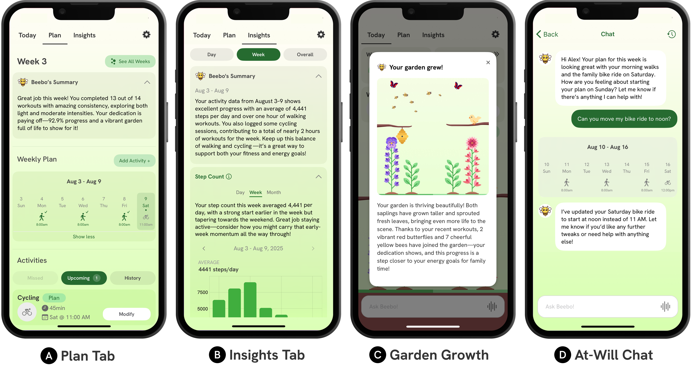
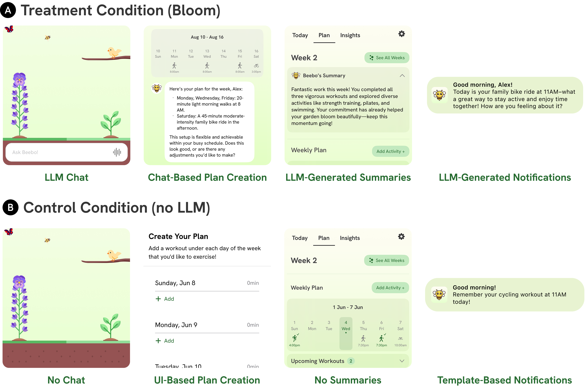
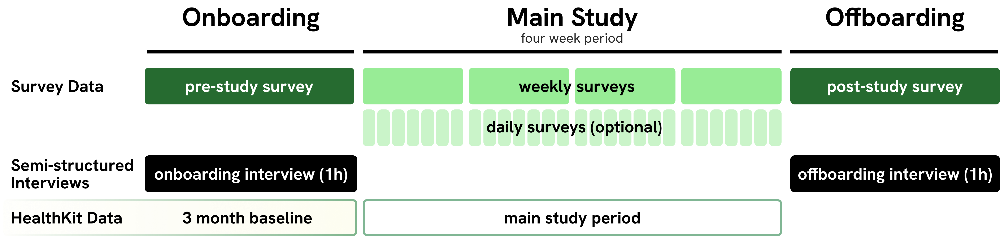

Application Features
When you first open Bloom, you meet Beebo, the app’s LLM coaching agent. Beebo lives in a garden that grows as you make progress toward your weekly plan.
Beebo begins with a guided onboarding conversation, asking about your motivation, prior experiences, and barriers to staying active. The conversation follows the structure of the Active Choices Program , a scientifically validated counseling framework developed at Stanford’s School of Medicine. By the end of onboarding, you and Beebo have created a personalized physical activity plan for the upcoming week.
Bloom’s home screen shows completed and upcoming workouts for the week, along with a chat bar that allows you to start a conversation with Beebo at any time. The garden appears in the background of the app and on your phone’s lock screen, making progress visible at a glance without requiring you to open the app.

The Plan tab shows your plan for the week, allowing you to edit the plan either through the UI controls or by chatting with Beebo. The Insights tab shows data visualizations from your wearable, such as step count, exercise time, or calories burned. Beebo also generates a summary for each chart describing patterns and connecting the data to your stated goals.
Beebo also sends personalized notifications at key moments throughout the day, reminding you of upcoming workouts or prompting you to reflect on your progress.
Safety
LLM coaching introduces several domain-specific risks that are not addressed by existing general-purpose guardrails, such as offering unsafe exercise advice, reinforcing body image concerns, or providing medical guidance. We conducted redteaming interviews with domain experts to develop a taxonomy of harms specific to LLM-based health coaching. Using this taxonomy, we implemented prompt-based safety filters that classify model outputs across multiple harm categories. If a response is classified as harmful in any category, it is rewritten by a revision prompt before being delivered to the user.
We constructed a benchmark dataset to tune and evaluate these safety filters. Across validation and held-out test sets, our harmfulness classifiers achieved recall of at least 0.96 in all settings, and only 1% of harmful responses remained harmful after the revision prompt. While no automated system can eliminate safety risks entirely, these results indicate that the filters substantially reduced the likelihood of unsafe outputs prior to deployment.
Field Study Design

We conducted a four-week field study with 54 participants to evaluate Bloom. Participants were randomly assigned either to the full Bloom system or to a no-LLM control. The control condition removed the chat and replaced all LLM-based features with rule-based alternatives.

We collected three months of pre-study baseline data from participants’ Apple Watches. During the four-week study period, participants created weekly activity plans, used the app in daily life, and completed weekly surveys. We collected three types of data: objective wearable measures, self-report survey measures, and system interaction logs.
Psychological Outcomes
The most consistent differences between conditions appeared in psychological measures. Participants in the LLM condition reported larger increases in positive physical activity mindsets, such as the belief that their current level of activity is beneficial to their health. They also reported greater enjoyment of exercise and higher levels of self-compassion when planned workouts were missed. These shifts were consistent across daily, weekly, and pre/post survey measures, whereas the control condition showed smaller gains on the same items.

These outcomes are relevant because behavior change theories link stronger beliefs in the benefits of physical activity to more sustainable, long term change. While our study was not designed to establish long-term effects, shifts in these constructs suggest meaningful differences in how participants interpreted and experienced their behavior over the four-week study period.
In our interviews, we found that participants attributed these changes in mindset to Beebo’s approach that centered participants’ own strengths and capacities:
“Beebo was persistent but not aggressive. [...] even though it’s not human or real, it made it okay that if you didn’t do what you said you were going to do or if you did some of it, it’s okay [...] Instead of telling me what I needed to do, [it] worked with me on what I wanted to do.” –P35
“My attitude going into this was, well, I don’t do a lot, I’m not doing enough. [...] And this helped me understand that I actually am doing things. When I work out in the garden and I’m digging holes, [...] I didn’t think that it was exercise or fitness in any way.” –P13
“I feel like it was finally an app that considered that everybody’s not going to go from zero to workout guru. It was an opportunity for someone like me [...] to incorporate my own fitness in a way that was approachable and reasonable for me.” –P29
Behavioral Outcomes
Both conditions significantly increased physical activity relative to the three-month baseline period. We doubled the proportion of participants meeting the recommended 150 minutes per week of moderate-to-vigorous activity, from 36% at baseline to 72% during the study period. This increase was observed in both the LLM and control conditions.
The study was not powered to detect between-condition differences in physical activity levels and we did not observe a clear short-term advantage of the LLM condition in mean activity levels. However, descriptive patterns indicate similar results across all outcome variables we measured. The LLM group showed more gradual initial increases, while the control group’s activity declined more rapidly over time, suggesting possible differences in persistence.
App Usage & Plan Statistics
System logs revealed clear differences in engagement. Participants in the LLM condition spent more than five times as much time in the app as those in the control condition. This increased engagement was not limited to chat, but was observed across all screens.

Participants in the LLM condition also created plans with a greater variety of activity types and more personalized structure. They made more frequent edits to their plans over time and showed slightly higher plan completion rates.
In interviews, participants often described the weekly plan as central to their accountability. Several emphasized that the ability to flexibly adjust plans through conversation helped them stay engaged, particularly when life circumstances changed. Rather than replacing structured planning, the LLM appeared to support more adaptive use of it.
Conclusion
Bloom is a mobile application that integrates an LLM-based health coaching chatbot with established behavior change interactions. In a four-week study with 54 participants, Bloom fostered more positive mindsets toward physical activity and supported more personalized and flexible workout planning compared to a non-LLM control. Participants in the LLM condition reported greater enjoyment, self-confidence, and a stronger sense of agency in managing their goals. Both conditions substantially increased physical activity, doubling the proportion of participants meeting recommended guidelines.
These findings suggest that LLM coaching may be particularly valuable for shaping how people think about and relate to physical activity. This work has implications for the design of future commercial health and fitness products, and also provides a foundation for longer-term clinical studies to evaluate whether mindset and engagement shifts translate into sustained behavioral outcomes.
Bloom is open source and our codebase, safety benchmarks, and prompts are all available on our GitHub repository.
Citation
@inproceedings{joerke2026bloom,
author = {J\"{o}rke, Matthew and Gen\c{c}, Defne and Teutschbein, Valentin and Sapkota, Shardul and Chung, Sarah and Schmiedmayer, Paul and Campero, Maria Ines and King, Abby C. and Brunskill, Emma and Landay, James A.},
title = {Bloom: Designing for LLM-Augmented Behavior Change Interactions},
year = {2026},
publisher = {Association for Computing Machinery},
address = {New York, NY, USA},
booktitle = {Proceedings of the 2026 CHI Conference on Human Factors in Computing Systems},
location = {Barcelona, Spain},
series = {CHI '26}
}